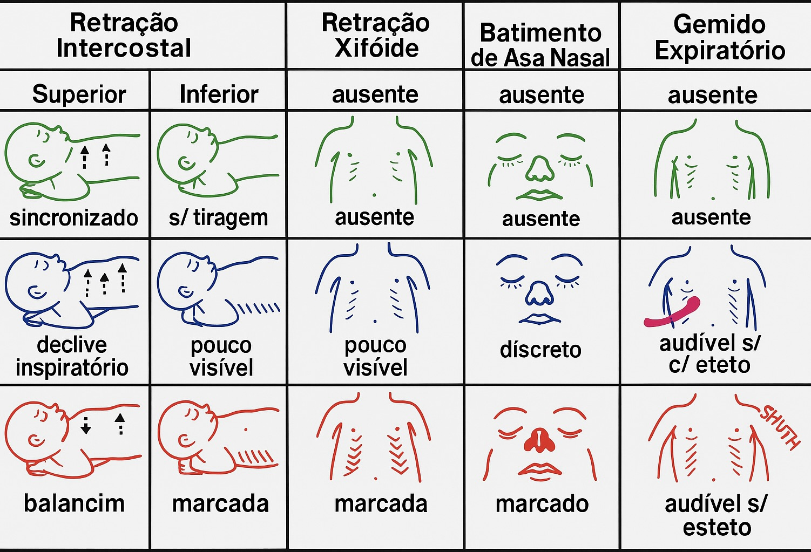

Ferramenta educativa para somar o escore (0–10) e registrar achados; não diagnostica nem define oxigenoterapia ou ventilação

Escala visual para avaliação dos 5 domínios do Silverman-Anderson
O escore Silverman-Anderson quantifica achados de dispneia em recém-nascidos em 5 domínios (0–2 cada; total 0–10), com base na publicação de referência. Serve para registro e comparação educativa; decisões terapêuticas cabem ao profissional assistente e ao protocolo local.
Uso educacional. O total é um marcador comportamental/fisiológico na escala; interpretação e conduta são assistenciais.